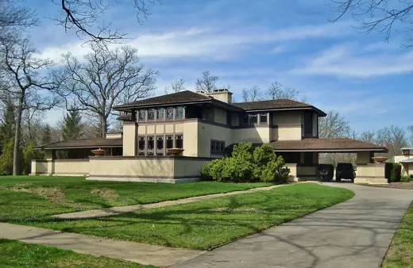
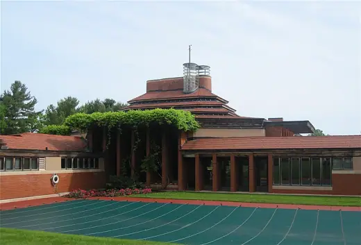
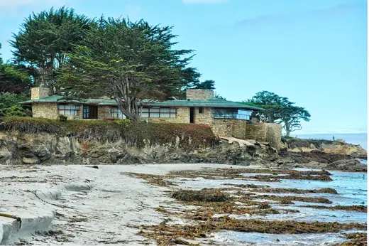
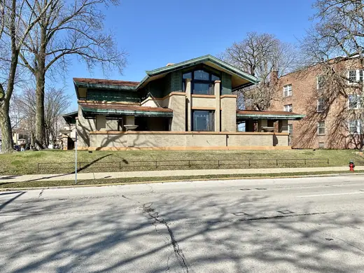
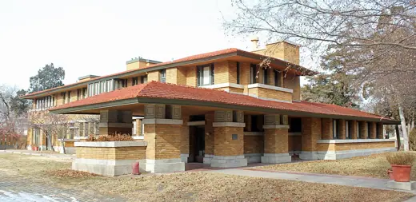
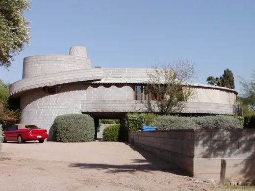
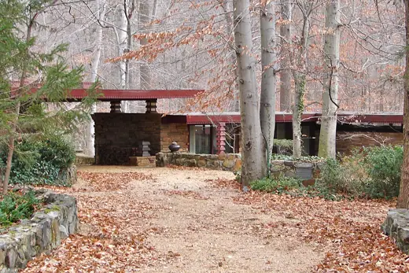

Frank Lloyd Wright buildings 46
Sort

Willits House1901 · Highland Park Darwin D. Martin House1905 · Buffalo
Darwin D. Martin House1905 · Buffalo Dr. G.C. Stockman House1908 · Mason City
Dr. G.C. Stockman House1908 · Mason City Avery Coonley House1909 · Riverside
Avery Coonley House1909 · Riverside Robie House1910 · Chicago
Robie House1910 · Chicago A. D. German Warehouse1921 · Richland Center
A. D. German Warehouse1921 · Richland Center Jiyu Gakuen Girls' School1922 · Tokyo
Jiyu Gakuen Girls' School1922 · Tokyo Yodokō Guest House1924 · Ashiya
Yodokō Guest House1924 · Ashiya Samuel Freeman House1925 · Los Angeles
Samuel Freeman House1925 · Los Angeles Herbert and Katherine Jacobs First House1937 · Madison
Herbert and Katherine Jacobs First House1937 · Madison Fallingwater1939 · Mill Run
Fallingwater1939 · Mill Run
Wingspread (Herbert F. Johnson House)1939 · Wind Point Jacobs II House (Solar Hemicycle)1948 · Middleton
Jacobs II House (Solar Hemicycle)1948 · Middleton Cedar Rock (Walter House)1950 · Quasqueton
Cedar Rock (Walter House)1950 · Quasqueton First Unitarian Society Meeting House1951 · Madison
First Unitarian Society Meeting House1951 · Madison
Mrs. Clinton Walker House1952 · Carmel-by-the-Sea Price Tower1956 · Bartlesville
Price Tower1956 · Bartlesville Annunciation Greek Orthodox Church1961 · Wauwatosa
Annunciation Greek Orthodox Church1961 · Wauwatosa Marin County Civic Center1962 · San Rafael
Marin County Civic Center1962 · San Rafael Norman Lykes House1967 · Phoenix
Norman Lykes House1967 · Phoenix Thomas H. Gale House1892 · Oak Park
Thomas H. Gale House1892 · Oak Park Winslow House (River Forest, Illinois)1895 · River Forest
Winslow House (River Forest, Illinois)1895 · River Forest
Dana–Thomas House1904 · Springfield Pettit Memorial Chapel1907 · Belvidere
Pettit Memorial Chapel1907 · Belvidere Unity Temple1908 · Oak Park
Unity Temple1908 · Oak Park Meyer May House1909 · Grand Rapids
Meyer May House1909 · Grand Rapids Frederick C. Bogk House1917 · Milwaukee
Frederick C. Bogk House1917 · Milwaukee
Henry J. Allen House (Allen-Lambe House)1917 · Wichita Hollyhock House1921 · Los Angeles
Hollyhock House1921 · Los Angeles Millard House (La Miniatura)1923 · Pasadena
Millard House (La Miniatura)1923 · Pasadena Ennis House1925 · Los Angeles
Ennis House1925 · Los Angeles Graycliff1931 · Derby
Graycliff1931 · Derby Taliesin West1937 · Scottsdale
Taliesin West1937 · Scottsdale Johnson Wax Headquarters1939 · Racine
Johnson Wax Headquarters1939 · Racine Pope–Leighey House1941 · Alexandria
Pope–Leighey House1941 · Alexandria Cedar Rock (Lowell Walter House)1950 · Quasqueton
Cedar Rock (Lowell Walter House)1950 · Quasqueton Douglas and Charlotte Grant House1951 · Cedar Rapids
Douglas and Charlotte Grant House1951 · Cedar Rapids
David and Gladys Wright House1952 · Phoenix Kentuck Knob1956 · Chalk Hill
Kentuck Knob1956 · Chalk Hill Beth Sholom Synagogue1959 · Elkins Park
Beth Sholom Synagogue1959 · Elkins Park Solomon R. Guggenheim Museum1959 · New York
Solomon R. Guggenheim Museum1959 · New York
Dudley Spencer House1961 · Wilmington Grady Gammage Memorial Auditorium1964 · Tempe
Grady Gammage Memorial Auditorium1964 · Tempe Monona Terrace1997 · Madison
Monona Terrace1997 · Madison